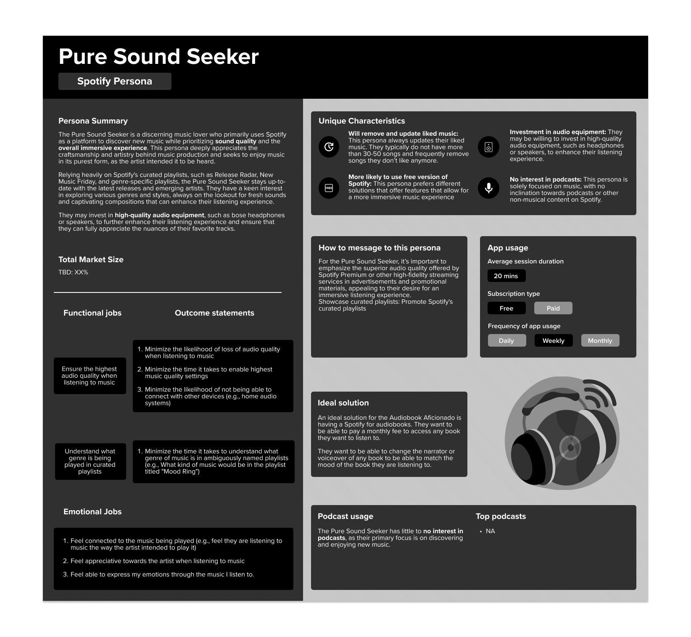

Context
- With the recent acquisitions of Sonantic & Findaway, Spotify is accelerating the development of their audiobook feature.
- With this in mind, business leaders want to understand what Spotify users an audiobook feature would fulfill the needs of.
- There is a need for a common aligned understanding of how users use, experience, and value the entire Spotify ecosystem.
Objectives
- Is there a segment of Spotify users who will benefit the most from an audiobook feature (e.g. will it address a key unmet need)?
- Do we at Spotify have a clear understanding of how users use our app?
- Do we understand users product use, their behaviors, attitudes toward music/audio, etc.?
Research approach
For this research, I used two qualitative research methods
- 1-1 remote interviews using JTBD qualitative interviewing.
- Ethnographic research with 3 participants.
Below is my rationale for why I chose to go with this research approach.

Ethnographic Research
- provides deep insights into how users interact with a product in their real-world context. This helps identify factors that may influence their behaviors and attitudes, which may not be evident in controlled research settings.
- Ethnographic research generates rich, qualitative data that can provide a nuanced understanding of users' experiences, motivations, and challenges.
- When there is budget, time, and ability to conduct Enthographic research, it is always more fun to observe people in their natural environments interact with the products/services :)
Jobs-to-be-Done
- JTBD research is centered on the user and their needs and motivations, rather than on the product or service itself. This can help you to gain a deeper understanding of the reasons why people use Spotify and what they hope to achieve by using the service.
- JTBD research can help to provide a richer understanding of the broader context in which people use Spotify, including the circumstances and situations in which they use the service.
- By focusing on the underlying job that people are trying to accomplish when using Spotify, JTBD research can reveal unmet needs or pain points that the service may not be addressing. This can help to inform product development and improve the user experience.
Recruitment Process
For this research I conducted 16 interviews (13 virtual via UserTesting and 3 in-person).
Below is a few demographic highlights from the sample
- The sample includes 10 females, 5 males, and 1 non-binary participant.
- The age range of the sample is 20-50.
- Age range 20-24: 2 participants
- Age range 25-29: 5 participants
- Age range 30-34: 2 participants
- Age range 35-39: 2 participants
- Age range 40-44: 2 participants
- Age range 45-50: 3 participants
- Median age of 27.5 and a mean age of 30.6


